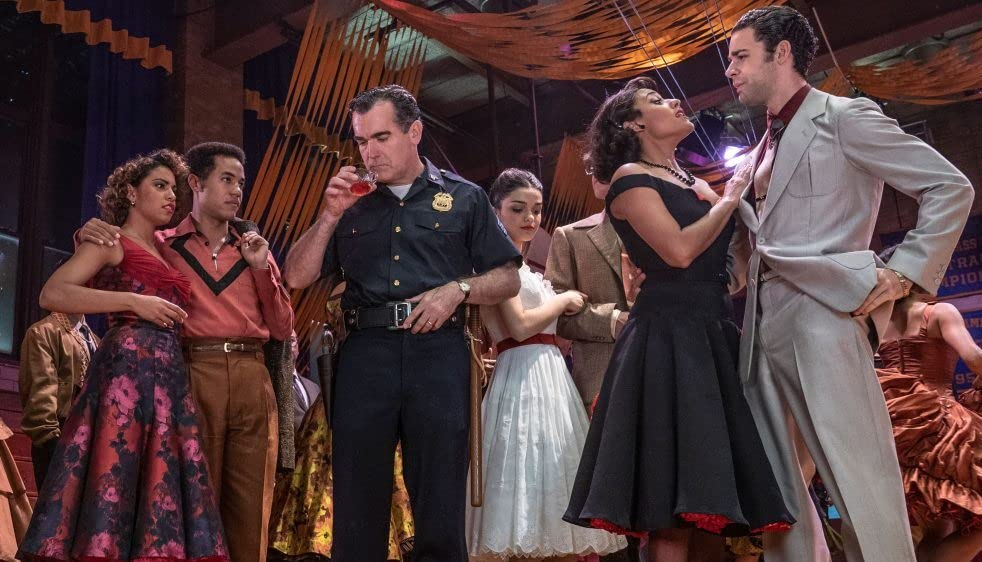
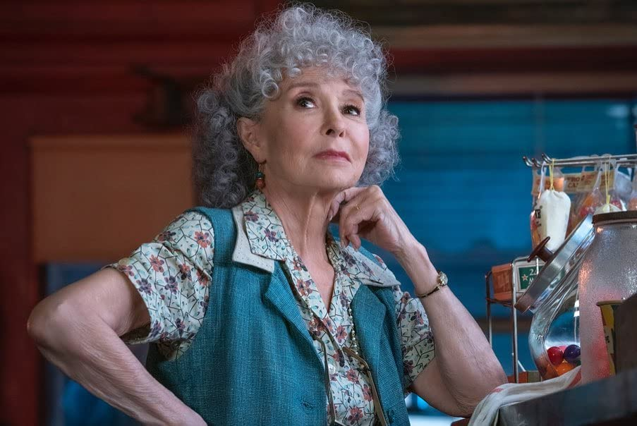
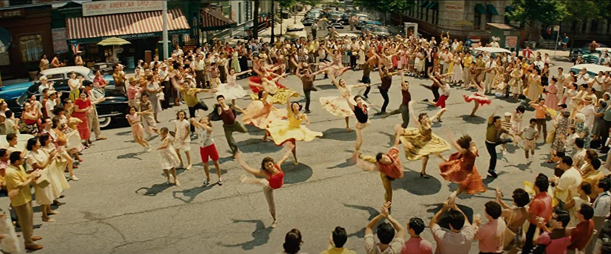

Warning – I’m going to be very GRUMPY today.
West Side Story is the greatest Broadway Musical of all time. It will live forever. I’ve had the privilege of seeing it many times in many countries, one memorable time, in Paris.
It is a STAGE musical written by two masters, Bernstein and Sondheim.
It should never be FILMED.
I never liked the 1960 version despite its many Oscars. Natalie Wood, who I always liked, from her child acting days, through ‘Rebel Without a Cause’[now there was a film] to ‘Bob and Carol and Ted and Alice’, was not good. If you want to see her good in a musical, see her in ‘Gypsy’, where she is brilliant.
Richard Beymer was frightful as Tony [why is Tony always portrayed as a wimp?], though I don’t think it was his fault, he has done some excellent work in his later career.
And as always with Hollywood films, why can’t they cast teenagers as teenagers [more of that later].
I watched this version earlier this week, and I now think it is worse than I originally thought.
 If I was Krupke, I'd be drinking too.To the new version. Firstly, Steven Spielberg should not have attempted it. He thought he’d be clever and cast completely unknown actors in the roles, but this only makes it look like a High School musical [come to think of it that’s what it looks like]. It has ‘night before the prom’ written all over it. At least in this version the Tony has a bit more oomph. Ansel Elgort gives him some life, but you still can’t believe that 12 months earlier, this boy was the leader of the Jets, fighting for his piece of dirt on the streets of New York. I wouldn’t have followed him across the road. Could he have changed so much in a year? This has always been my problem with Tony, I don’t think any director, has researched his past. He’s lived 17 years before we meet him singing ‘Something’s Coming’. He’s tried to change himself, yes but, I think we should feel something of his history.
And why move the order of the songs around, you can’t improve on perfection.
Now if I was worried about the ‘teenage’ boys in the Robert Wise version, my objections then are nothing to what I thought this time. The Sharks all seem to be played by overweight middle-aged men. The Jets fare a little better but are all too old. As I’ve said before, why not cast actors who are in their teens. Remember, Romeo and Juliet were twelve and thirteen.
If nothing else, the cars were the correct age.Mr Spielberg invites Rita Moreno to join his team as consultant and adviser, she, having won an Oscar for her Anita in 1960. We can imagine a production meeting, one morning, when Spielberg says, Hey Rita I’ve had a wonderful idea overnight. What’s that Rita replies. I’m going to put you in the movie, Steven says. As what, she replies, again. I’m going to kill off Doc, and you’ll play his widow and takeover the drugstore and give sage advice to all the Jets. But Steven that’s ridiculous, I can’t do that, I’m too old, the Jets wouldn’t take advice from me! They will if I direct them too, he replies. And further to that, I’m going to have you sing ‘Somewhere”. What! That’s f****in ridiculous Steven, ‘Somewhere’ is sung as a dream sequence after Tony and Maria have made love, had their cigarette, and fallen into a deep slumber. It’s the most poignant and tender moment in Broadway Theatre. It’ll be even more tender and poignant when you do it, he replies.
And of all the mistakes, this is his greatest. An old lady in charge of the drugstore, harbouring a killer in her basement. No wonder he altered Officer Krupke all around. No wonder the boys sang ‘Krup you’. The police would have entered, said we believe you have Tony downstairs and promptly arrested him. Then comes the poignant moment where Rita sings her number. It isn’t poignant, at all. Who could forget the first Broadway production, where, during each performance, Reri Grist, who was playing Consuela, would step into the pit and sing ‘Somewhere’ during the ballet sequence of the love scene? Still the finest rendition of such a beautiful song.  Moreno is a saint, and exudes charm and intelligence despite the incompetence around herI’ve admired Rita Moreno throughout her career. I remember all her roles in those 20th Century Fox films of the late 40s and 50s. Her Tuptim in ‘The King and I’ was delightful and her Anita was strong, though, I believe she was too old to play it at that time, she was 29. [Age, and authenticity, don’t seem to matter in Hollywood.]….
And so, it becomes a mish mash in the hands of Mr Spielberg.
 Bigger budget means better dance numbers, right? Right?!?I loved your first film, ‘Duel’, Mr Spielberg, but not your last one, ‘West Side Story’.
Star Rating: 2/5 [one mark for Mr Bernstein and one mark for Mr Sondheim]. - [one mark for Mr Bernstein and one mark for Mr Sondheim]